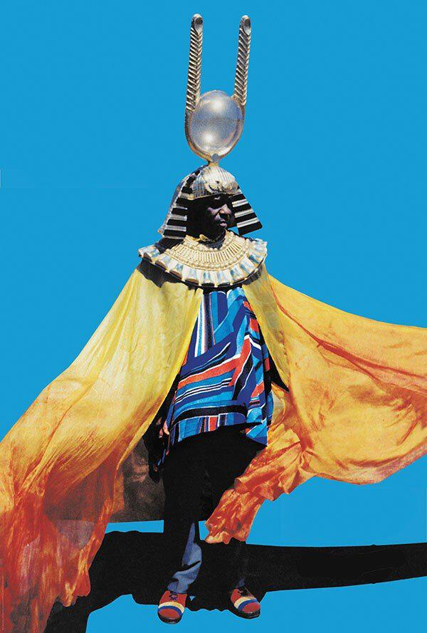

Dear Saki,
I hope this text finds you well. Thank you for your enthusiasm to engage us through this additional format. We are still very excited about the possibility of a future visit to campus. I personally was so excited about the timing of it all.
Zimbabwe celebrates it’s 40th year as an independent nation, your own birthday and ZIVA’s 20th anniversary feels like an incredibly charged triangulation.
Instead of trying to simulate the experience of a lecture and because we all need a bit more levity and reflection during this time we’d recalibrated and opted for a format that is more causal and conversational. I’ve been wanting to
introduce
you and Chino Amobi, a former graduate of our program at VCU and now a member of our faculty. I’ll hand over to you Chino to continue the conversation with Saki. There are so many amazing connections between your interests and trajectories
and
I’m hoping some of these will be teased out here in this conversation.
I’ll leave you with a video clip that I intended to play at the beginning of the lecture. Please feel free to attach your own links, images and sound to this thread. We are setting up to accommodate a range of media. So looking forward to
transcribing and publishing this.
Best
Nontsi
4/10/20, 9:22:10 AM
N
4/10/20, 9:22:14 AM
Saki Mafundikwa
Hi Nontsi, Chino
So excited to be doing this here! This video... bittersweet! Chinua Achebe called it! His “Things Fall Apart” very prophetic for Zimbabwe (and many other Afrikan countries). “Cry the Beloved Country” and George Orwell’s “Animal Farm”! How,
why
and WHERE did it all go wrong for us?
4/10/20, 9:43:16 AM
Chino Amobi
Hey everyone, good to meet you Saki. This video is so powerful I remember seeing footage of this show in a Bob Marley documentary about his life. It’s so wild to see the hope on people’s faces at that show and to think about how the energy
must have felt.
4/10/20, 1:00:09 PM
S
I had left Zimbabwe two years before so I missed the show. I was in university at Indiana, Bloomington where we created our own magic on that day. I did all the flyers for the Independence Day party, Zimbabwe’s FIRST ever! There was so much
HOPE everywhere, hope that Zimbabwe would become a success story. So many people around the world had supported our struggle for independence, so many people within and outside the country had sacrificed their lives... so the euphoric faces
you see in the video... they carried the hopes of a nation. Bob Marley provided the soundtrack for that hope.
4/10/20, 1:22:23 PM
C
That’s beautiful... Do you still have images of those flyers? Or any ephemera that was created for/around that event or events in proximity to it around that time?
4/10/20, 1:44:28 PM
C
What music were you and your friends listening to around that time in Indiana? With everything going on in Zimbabwe
4/10/20, 1:45:41 PM
S
That’s like 40 years ago LOL, but the answer is YES!!! Unfortunately, all that stuff’s in storage somewhere in Harare! Just so you know, I’m a hoarder (although I prefer “collector”) 😜
4/10/20, 2:00:14 PM
S
I was a huge Reggae fan and so I listened to a LOT of Reggae! I also saw a lot of live Reggae music around that time... until a girlfriend born in Indianapolis of a Nigerian father and an Afrikan American mother introduced me to FELA!!! Wow!
First I loved the album covers... it was like, “Afrikan graphic design!!!” Tanya was great and we shared a love for all types of music... very eclectic! We were into Nina Simone, Billie Holiday, Ella... we drove to Indy for a Count Bassie show and saw Muddy Waters live at a Bloomington club!
4/10/20, 2:10:22 PM
S
But I was also heavily into Thomas Mapfumo music! The early stuff, the pre-independence stuff was incredible! The true “Chimurenga” sound, I was a huge fan!
4/10/20, 2:12:33 PM
S
Let me just say here that Bloomington was an oasis in a conservative and racist state. IU, Bloomington was a college town, not really part of Indiana! So musically, a lot of amazing stuff happened! The Rolling Stones did a surprise concert
there... fantastic stuff like that was not unusual. I saw a killer Toots and the Maytals show there along with Chicago Blues stalwarts like Koko Taylor, Luther Allison who were staples at The Bluebird night club.
4/10/20, 2:26:44 PM
S
Indiana, well, Bloomington was very good to me! Many fond memories...
4/10/20, 2:28:07 PM
S
I know I glossed over seeing Muddy Waters live at Jakes Nighclub but it was HUGE! It was predominantly a white student audience so when it was over, I rushed backstage and Muddy who was surrounded by admirers made eye contact and pushed
through the crowd and extended his hand, I shook it and mumbled something about an amazing show! As we walked into the summer night, I said, "Muddy Waters shook my hand, I’m not gonna wash it!” Remains one of those memories in my life! OMG
Muddy Waters!!!
4/10/20, 2:34:38 PM
C
That sounds like a powerful experience. I love Thomas Mapfumo! Both him and Fela are legendary.
4/10/20, 3:15:36 PM
C
Do you have some examples of the “Chimurenga” sound?
4/10/20, 3:16:08 PM
C
Also I’m a bit of hoarder myself. Especially digitally with song files and images
4/10/20, 3:17:42 PM
S
https://www.youtube.com/watch?v=ISgeA3yZ-ww
4/10/20, 3:23:09 PM
C
This ones great. So regal. There’s such a power and spirit liberation in the voice. It makes me think of an artist named Farai from Zimbabwe who lived in the UK. My record label NON released this song and video a few years back with NTS
Radio
4/10/20, 3:30:33 PM
C
https://youtu.be/VsRQ0HS3odk
4/10/20, 3:30:35 PM
S
WHOA!!! LOVE this, avant garde!!! Never heard of her but she's great! Some real underground shit!
4/10/20, 3:38:08 PM
S
We always find each other.
4/10/20, 3:38:59 PM
S
I would think you know the work of Arthur Jaffa?
4/10/20, 3:40:13 PM
C
Yeah! She’s so good. We released a good amount of underground artist of the diaspora who we felt were really pushing electronic music into new frontiers but still drawing from the greats of the past generations.
4/10/20, 3:40:22 PM
C
Ah yeah Arthur Jafa is a legend
4/10/20, 3:40:55 PM
C
His films are great
4/10/20, 3:41:00 PM
S
She's beyond "good" she's GREAT!!! I'm an instant fan!
4/10/20, 3:41:28 PM
S
That he is!
4/10/20, 3:42:15 PM
C
She is great. Honestly to me she is a star.
4/10/20, 3:42:41 PM
C
This is her album we released https://nonworldwide.bandcamp.com/album/farai-kisswell
4/10/20, 3:42:55 PM
S
He's like a classic Dub artist, except he uses images instead of sound.
4/10/20, 3:43:15 PM
C
That’s a really accurate way to describe him
4/10/20, 3:44:08 PM
C
The way that the sonic experience can translate to visuals
4/10/20, 3:44:37 PM
C
I think about that a lot
4/10/20, 3:44:45 PM
C
I want people to be able to hear the images I make
4/10/20, 3:45:16 PM
S
Nina Simone!!! That's her influence, it's crystal clear! LOVE, LOVE her!!!
4/10/20, 3:46:05 PM
C
Oh hell yeah
4/10/20, 3:46:12 PM
C
That is the bloodline
4/10/20, 3:46:40 PM
C
Loooove Nina
4/10/20, 3:46:48 PM
S
I gotta check into FARAI like more seriously, thanks for sharing, man!
4/10/20, 3:47:07 PM
C
For sure!
4/10/20, 3:47:15 PM
S
Ok, so maybe we can talk about Sun Ra. I saw him live too...
4/10/20, 3:48:14 PM
C
That’s amazing! I bet that we insane
4/10/20, 3:48:36 PM
C
that man was not of the world
4/10/20, 3:48:56 PM
C
Where did you see him
4/10/20, 3:50:41 PM
S
1987, I was moonlighting as a writer for this Zim/UK magazine called, "Black Beat International". They wanted me to cover mainly Reggae since that was the music happening in Zim post independence... Bob Marley planted the seed... So I called
my column "Big Apple Runnings" since I lived in NYC. So, although I wasn't doing any Jazz stuff for them, I used my credentials to get into the 1987 JVC Jazz Festival at Lincoln Center. The PR guy took a liking to me and he invited me to a
"very exclusive and special show" at one of the Carnegie Hall recital halls. So, I went there very excited and discovered I was one of about a dozen writers. The guy told us that Sun Ra was going to give us a piano recital, solo. OMG,
anyway, I think each and every one of us tried our best to be blasé... We took our seats, pads and pen in hand. The Oracle came in draped in majestic robes, nodded and sat down by the grand piano. He paused for a minute in a silent prayer,
then he started to play... splashing notes a la Jackson Pollock is more like it! He got in the zone and enthralled us for a full 20 minutes, stopped, took a bow and walked out as silently as he had come. That was it. I had witnessed the man
from Space do his thing, a special thing... I still feel the hairs on my skin stand to this day!
4/10/20, 4:03:38 PM
S
The icing on the cake was Miles Davis and his band who played during the same festival. I smuggled a tape recorder so I was able to record a bootleg of the performance. I have that tape somewhere... good hoarder but very lousy archiver.
4/10/20, 4:06:10 PM
S
I do remember that Kenny G opened for Miles, we all wondered WHO had made that decision... Fucking Kenny G? Jeezus
4/10/20, 4:07:20 PM
S
YO, profound!!!
4/10/20, 4:17:04 PM
C
Man... that literally sounds like something out of a movie. Someone needs to make a movie/documentary about all your experiences interspliced with your archive. The way you described it all brought it to life right in front of me low key
felt like I was there. I can just see him just walking out like straight up hovering out of the room after playing. It’s also wild to think about how extreme the personalities were back then. Sun Ra and Miles. Straight up larger than life
not only in there music but in their style and countenance. Like we legit don’t even have a category for this anymore
4/10/20, 4:17:50 PM
C

4/10/20, 4:17:58 PM
S
True man, "we don't even have a category for this anymore". So true... and sad at the same time. So is it all about sampling, splicing, zero originality? man, that makes me so sad.
4/10/20, 4:21:32 PM
C
It is.
4/10/20, 4:23:10 PM
S
And then of course, I met FELA...
4/10/20, 4:23:20 PM
C
You met Fela?
4/10/20, 4:23:30 PM
S
Let me take a break so I can find the image and tell the story!
4/10/20, 4:23:46 PM
C
For sure!
4/10/20, 4:24:29 PM
S
I should be back in an hour, need to take my daily walk with my sister who's nourishing me back to health here in The ATL.
4/10/20, 4:25:08 PM
C
Word thats a great city. I need to get some fresh air too
4/10/20, 4:26:05 PM
S
Btw, I'm enjoying this riffin' – Nontsi deserves much kudos for imagining this... brilliant!